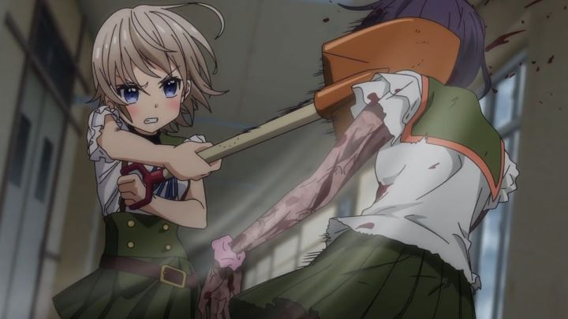

"School-Live!" is an anime that bets everything on its premise. If you didn't know what the synopsis was, you might begin watching the first episode thinking it was a harmless, standard "slice-of-live-comedy-featuring-cute-girls-at-school" series (there's so many of those, it's practically the most popular anime genre). That first episode expertly draws you into thinking that's all it is, with a handful of subtle clues that suggest something is off, before the big reveal at the end: this is a zombie-apocalpyse story.Set in a Japanese high-school, Yuki and her three friends all live overnight at the property, being part of what they call the "school life" club (mercifully, better translated than the show's awkward English title). Yuki is a little clumsy, absent-minded, and just plain goofy. But she loves school, and loves hanging out with her friends, their pet dog, and their teacher (acting as the club advisor). The problem is, she "thinks" school and classes are occuring as usual, having blocked out the horror the the situation around her: classes are empty, windows are broken, blood stains the walls, and the "students" are wandering aimlessly outside the locked-down building, biting any living thing they come across. It's dangerous not accepting what's real and what's fantasy: even her loving teacher doesn't seem to be noticed by her friends, strongly hinting at her own fate, playing into the series climax.Her three friends are real though, and they quietly agree to play along with Yuki's fantasy over the several weeks they've been stuck at school, while keeping an eye out for her, subtly keeping her from going down to the bottom floor or going outside. And for now, they seem to be fine, with enough food (from a rooftop farm), water (from a rain-filter system) and electricity (from solar panels) to provide them the basics. In fact, they seem a little "too" fine... the school seems to be designed for exactly this type of disaster, as if the adults knew something would happen...There's a lot of meat to chew on in "School-Live!," stretching out a lot from a gimmick premise, even if most of it is standard for the zombie-genre. Yuki's mental state is the most interesting aspect: most anime would have a handful of characters filling this type of role, but when only one is this "eccentric," it suggests she has a severe case of ADHD, or even possibly a more severe mental disability. It raises a lot of questions about whether it's safe for her to be like this. Her jokes and spontaneous suggestions for an event ("Let's have a 'Sports Day' festival in the hall!", "Let's swim in the pool/filtration-system on the roof!") brighten up the day for everyone else, helping them smile in a crisis from which there seems to be no hope. But surely, envitably, this would backfire one day, and Yuki would do something stupid that puts everyone at risk? Miraculously, when the mystery of where the zombies came from is (partially) addressed, the show avoids the expected "worst-case-tradegy-scenario" and is able to come to a reasonably happy ending, both consistent with the zombie-infestation and the recurring theme of the joys of school-life. It's surprisingly satisfying and effective, even if some of the reveals are a little too convenient.  However, "School-Live!" is primarily a "slice-of-life-comedy," with the zombies and the drama that comes with it just being window-dressing. More than half of the show is aimless, relying on how cute Yuki's antics are. Which is fine, but it's difficult to write a show compelling or funny enough to justify itself, a reason why I can't think of many standouts from that genre. The project would have been a lot stronger if condensed into 6 episodes, or even a feature film. Not to mention that some of the diversions are questionable: do I really need to see scenes involving the shower, bikini shopping, or playing at the pool, featuring a group of teenagers (drawn to look like they're barely 10-years old) in the middle of the end of the world? The fan-service had absolutely no place here. The production values are a bit of a mixed bag. During "happy" scenes, the school is bright and colorful, and also devoid of detail (both on purpose, and as per standard for most anime shows). Character designs lean heavily into "moe"-cuteness, a little too much so for me to be on-board with (the pet dog is adorable, being just a blob with a tongue and two eyes, but I wasn't sold on Yuki's design). Things are significantly more interesting, and better executed, when the "horror" scenes are involved, from the zombie designs, the carnage left in the classrooms, and the smart layout/framing of each of them on camera. A few cinematic touches during flashbacks of the dramatic stories for the other characters also shine through, making the show look notably better than a standard anime, if only for a portion of the scenes. Animation is a bit pedestrian though, with a lot of talking heads, and occasionally noticable off-model problems in some shots. Zombies are all 3D-animated, but given they "aren't alive" anyway, the issue didn't bother me and felt appropriate. Sentai Filmworks gave an English dub for the American release, and it's... fine. Both comedic and dramatic moments are well acted, but Yuki's actress in particular was so loud and bubbly, that it proved to be more distracting and ear-grating than anything else. Miki, one of her friends, also had a distinct but awkward tone to her voice. And that's practically half the cast: I'm certain most viewers will insist of watching the Japanese dub instead."School-Live!" has a powerful gimmick as a premise, and for the most part, it does exactly what one might expect within it, and not much more than that. But it does so effectively and efficiently with the production budget at hand. Some viewers looking for horror might roll their eyes at "cute girls goofing around at school," and some comedy fans might be horrified at the true nature of the show. But it was, generally, a successful experiment that stands out against its peers.
- "Ani" More reviews can be found at : https://2danicritic.github.io/ Previous review: review_Satellite_Girl_and_Milk_Cow Next review: review_School_Days